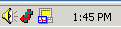
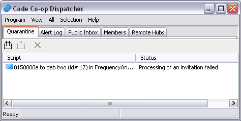
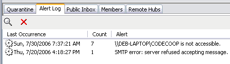
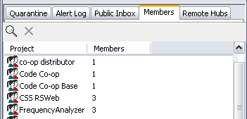
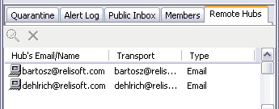
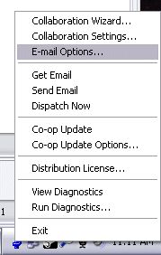

You need to configure the dispatcher in order to collaborate with others. Here are you options:
 Other than during the initial setup, the Dispatcher tries to be as unobtrusive as possible. You will only see its icon on your taskbar. When this icon turns red and sprouts arrows, it means that there are some scripts waiting to be dealt with.
To open the dispatcher, click on the Dispatcher icon and select "View Diagnostics". A window will pop up with five tabs as shown below.

The quarantine tab will alert you to any problems with script delivery. For example, if you receive an invitation to join a project, the scripts associated with this invitation will remain in quarantine until you provide a root path for the project files. To release a script from quarantine, double-click on it or click on one of the Release buttons.

The alert log records any problem dispatching scripts whether over LAN or Email. You can view the full log or delete the log (you can't delete individual records).
The Public Inbox list any scripts waiting to be routed. Double-clicking on a script will show you the details for that script (such as project, sender, recipients, etc.). Typically, this tab will be empty unless your are offline or you are sending some large scripts.

The Member's tab lists all local project members. On a Hub, it also lists satellite members. The display is organized by the project. You can double-click on each entry to see the list of (local and satellite) members for that project. This is the place where you can edit satellite members' local transport. This is usually a network path of the form \\SATELLITE\CODECOOP. If your machine is a satellite, this list should not contain any satellite members--the location column may only contain the here location.

The Remote Hubs tab contains a list of known remote Hubs and their email addresses.

Outgoing scripts are automatically dispatched by the dispatcher (unless you're on a Hub with emailing set to manual).The dispatcher's context menu contains the Get email command that lets you retrieve scripts directly from your email program (rather than waiting for automatic periodic retrieval). Scripts tend to accumulate in the Public Inbox when some network connections are down.